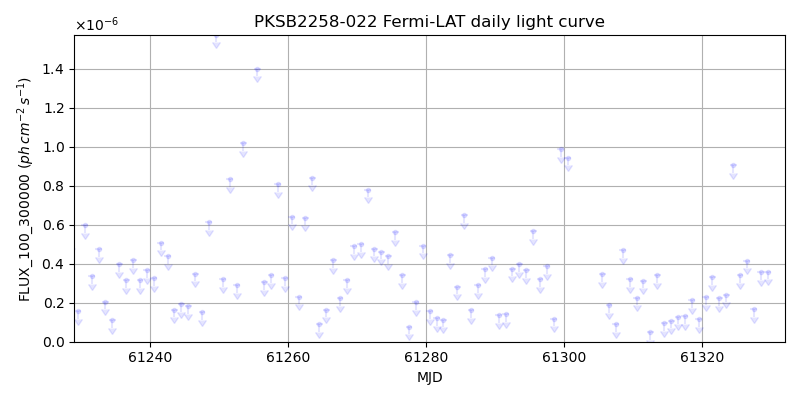
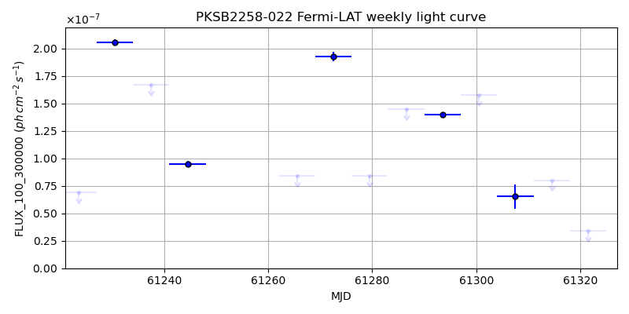
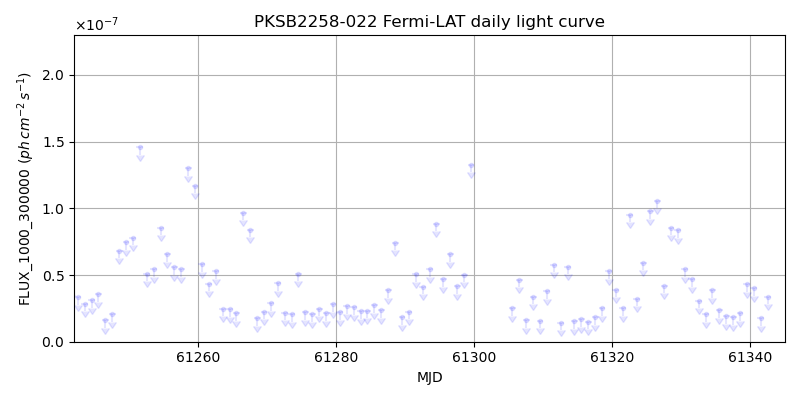
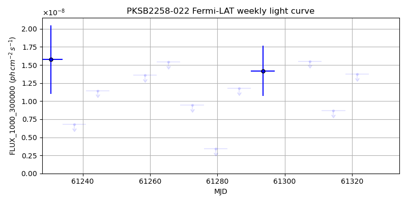

LAT Lightcurve site: https://fermi.gsfc.nasa.gov/ssc/data/access/lat/msl_lc/source/PKS_B2258-022
NED: Query
Time of last update of this page: UT: 2026-10-24 15:30 (MJD: 61337.646)
| Property | Value |
|---|---|
| R.A. | 23:01:07.92 |
| Dec. | -1:58:04.8 |
| z | 0.777 |
| 3FGL SpectrumType | |
| 3FGL PL Index | -1.00 |
| 3FGL Flux_100_300000 | -1.00e+00 |
| 3FGL Flux_1000_300000 | -1.00e+00 |
| 3FGL Flux >200 GeV | -1.00e+00 |
| 3FGL Extrap. Crab >200 GeV | -1.00 |
| 3FGL Flux After EBL Absorption >200GeV | -1.00e+00 |
| 3FGL EBL Crab Fraction >200GeV | -1.00 |

| MJD | dMJD | Flux | dFlux | Frac3FGL | FracCrab>200GeV | EBLFracCrab>200GeV |
|---|---|---|---|---|---|---|
| 61332.50 | 0.50 | 1.04e-07 | 0.00e+00 | 0.00 | 0.00 | -0.00 |
| 61333.50 | 0.50 | 2.24e-07 | 0.00e+00 | 0.00 | 0.00 | -0.00 |
| 61334.50 | 0.50 | 1.82e-07 | 0.00e+00 | 0.00 | 0.00 | -0.00 |
| 61335.50 | 0.50 | 5.73e-07 | 0.00e+00 | 0.00 | 0.00 | -0.00 |
| 61336.50 | 0.50 | 2.59e-07 | 0.00e+00 | 0.00 | 0.00 | -0.00 |

| MJD | dMJD | Flux | dFlux | Frac3FGL | FracCrab>200GeV | EBLFracCrab>200GeV |
|---|---|---|---|---|---|---|
| 61300.50 | 3.50 | 1.58e-07 | 0.00e+00 | 0.00 | 0.00 | -0.00 |
| 61307.50 | 3.50 | 6.53e-08 | 0.00e+00 | 0.00 | 0.00 | -0.00 |
| 61314.50 | 3.50 | 8.02e-08 | 0.00e+00 | 0.00 | 0.00 | -0.00 |
| 61321.50 | 3.50 | 3.38e-08 | 0.00e+00 | 0.00 | 0.00 | -0.00 |
| 61328.50 | 3.50 | 9.92e-08 | 0.00e+00 | 0.00 | 0.00 | -0.00 |

| MJD | dMJD | Flux | dFlux | Frac3FGL | FracCrab>200GeV | EBLFracCrab>200GeV |
|---|---|---|---|---|---|---|
| 61332.50 | 0.50 | 3.07e-08 | 0.00e+00 | 0.00 | 0.00 | -0.00 |
| 61333.50 | 0.50 | 2.08e-08 | 0.00e+00 | 0.00 | 0.00 | -0.00 |
| 61334.50 | 0.50 | 3.85e-08 | 0.00e+00 | 0.00 | 0.00 | -0.00 |
| 61335.50 | 0.50 | 2.35e-08 | 0.00e+00 | 0.00 | 0.00 | -0.00 |
| 61336.50 | 0.50 | 1.90e-08 | 0.00e+00 | 0.00 | 0.00 | -0.00 |

| MJD | dMJD | Flux | dFlux | Frac3FGL | FracCrab>200GeV | EBLFracCrab>200GeV |
|---|---|---|---|---|---|---|
| 61300.50 | 3.50 | 2.45e-08 | 0.00e+00 | 0.00 | 0.00 | -0.00 |
| 61307.50 | 3.50 | 1.55e-08 | 0.00e+00 | 0.00 | 0.00 | -0.00 |
| 61314.50 | 3.50 | 8.67e-09 | 0.00e+00 | 0.00 | 0.00 | -0.00 |
| 61321.50 | 3.50 | 1.37e-08 | 0.00e+00 | 0.00 | 0.00 | -0.00 |
| 61328.50 | 3.50 | 2.66e-08 | 0.00e+00 | 0.00 | 0.00 | -0.00 |
--------------------------------------------------------- Using user-supplied coords: 23:01:07.92 -1:58:04.8 2000 --------------------------------------------------------- FLWO UT night of: 2026-10-25 Local Sid. @ Midnight: 01:50 Sunset (-15.0) (local, UT): 18:49 01:49 Sunrise (-15.0) (local, UT): 05:27 12:27 Moonrise (local, UT): Moonset (local, UT): Moon phase: 0.99 --------------------------------------------------------- AzTime LSID UT Obj_el Obj_az Mn_el Mn_az Sep. --------------------------------------------------------- 18:49 20:39 01:49 42.3 127.7 26.2 94.5 31.6 19:19 21:09 02:19 47.1 135.9 32.4 98.6 31.8 19:49 21:39 02:49 51.2 145.6 38.6 103.2 32.1 20:19 22:09 03:19 54.2 156.9 44.7 108.4 32.3 20:49 22:39 03:49 56.1 169.7 50.6 114.6 32.5 21:19 23:09 04:19 56.5 183.3 56.2 122.3 32.7 21:49 23:39 04:49 55.4 196.5 61.2 132.2 32.9 22:19 00:09 05:19 52.9 208.7 65.5 145.3 33.1 22:49 00:39 05:49 49.3 219.2 68.4 162.2 33.3 23:19 01:10 06:19 44.9 228.2 69.4 182.2 33.5 23:49 01:40 06:49 39.9 235.7 68.2 202.0 33.7 00:19 02:10 07:19 34.4 242.2 65.1 218.6 33.9 00:49 02:40 07:49 28.6 247.8 60.8 231.3 34.1 01:19 03:10 08:19 22.6 252.8 55.7 240.9 34.3 01:49 03:40 08:49 16.4 257.3 50.1 248.5 34.5 02:19 04:10 09:19 10.1 261.5 44.3 254.6 34.7 02:49 04:40 09:49 3.9 265.6 38.2 259.8 34.9 03:19 05:10 10:19 -1.6 269.5 32.1 264.4 35.2 03:49 05:40 10:49 -9.1 273.5 26.0 268.5 35.4 04:19 06:10 11:19 -15.5 277.6 19.9 272.4 35.6 04:49 06:40 11:49 -21.8 281.9 13.8 276.2 35.9 05:19 07:11 12:19 -28.0 286.6 7.8 279.9 36.2 05:27 07:18 12:27 -29.5 287.9 6.2 280.9 36.3 --------------------------------------------------------- Moon up all night, no dark time. Dark hours >55 deg.: 0.00